Práctica 3.3.- Despliegue de una aplicación Flask
Antes de empezar con el despliegue, nos conectaremos mediante SSH desde nuestra máquina a la máquina Debian mediante el comando ssh nombreUsuarioDebian@direccionIpDebian, de la siguiente manera:
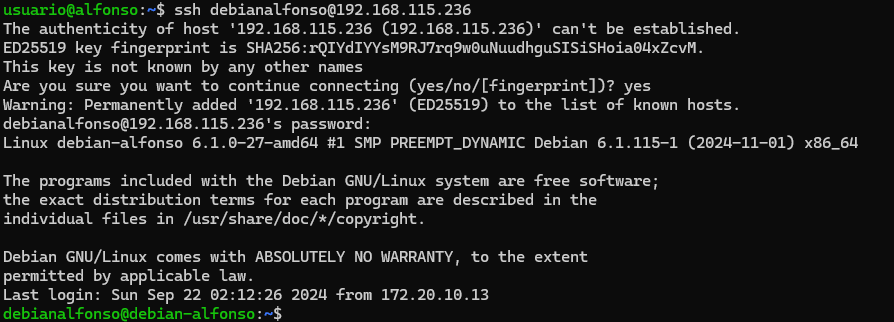
1.- Procedimiento para el despliegue
Para realizar el despligue de una aplicación Flask seguiremos una serie de pasos:
-
Actualizamos los repositorios de paquetes del sistema con
sudo apt update.
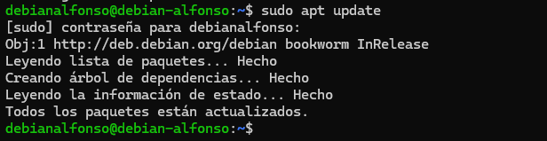 -
Instalamos el gestor de paquetes de Python con
sudo apt install python3-pip.
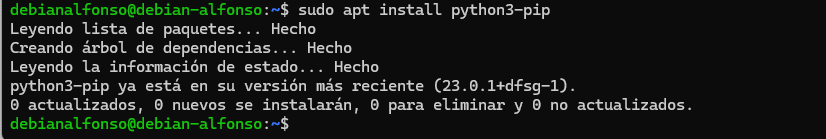 -
Instalamos el paquete pipenv que se encarga de gestionar los entornos virtuales con
sudo apt install pipenv.
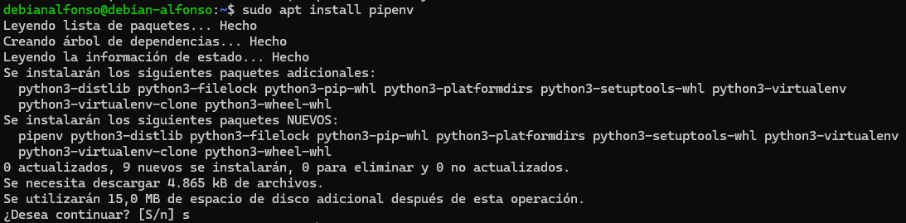 -
Comprobamos que está bien instalado mostrando su vesión con
pipenv --version.
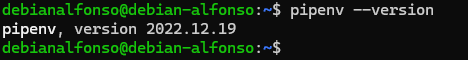 -
Creamos el directorio donde almacenaremos nuestro proyecto con
sudo mkdir /var/www/nombreAplicacion.
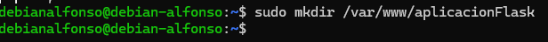 -
Como lo creamos con
sudo, los permisos pertenecen al usuariorootdel sistema:
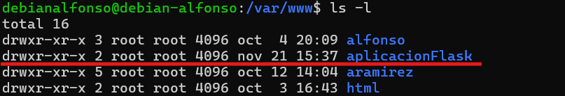 -
Hay que cambiarle los permisos para que pertenezcan a nuestro usuario (debianalfonso en mi caso) y pertenezca al grupo www-data con el siguiente comando
sudo chwn -r USUARIO:www-data /var/www/nombreAplicacion
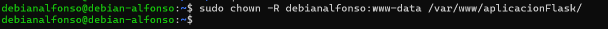 -
Establecemos los permisos adecuados para que pueda ser leído por todo el mundo con
sudo chmod -R 775 /var/www/nombreAplicacion.
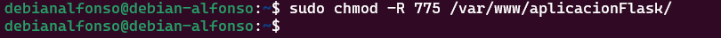 -
Dentro del directorio de nuestra aplicación, creamos un archivo oculto
.envque contendrá las variables de entorno con el comandotouch .env.
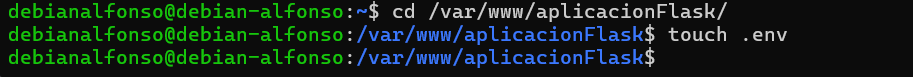 -
Editamos el archivo y añadimos las variables, indicando cuál es el archivo
.pyde la aplicación y el entorno, que en nuestro caso será production. Para editarlo usamos el comando:sudo nano .envy después verificamos los cambios concat .env.
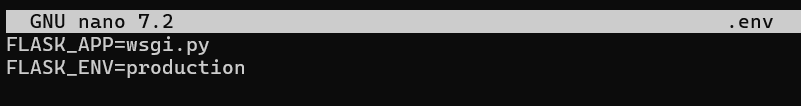 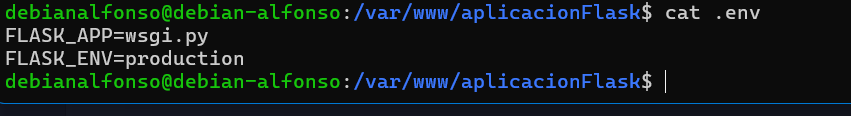 -
Iniciamos el entorno virtual mediante
pipenv shell. Pipenv cargará las variables de entorno desde el fichero.envde forma automática.
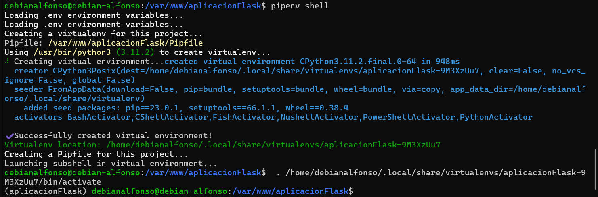 -
Ahora usamos
pipenv install flask gunicornpara instalar las dependencias necesarias para nuestro proyecto.
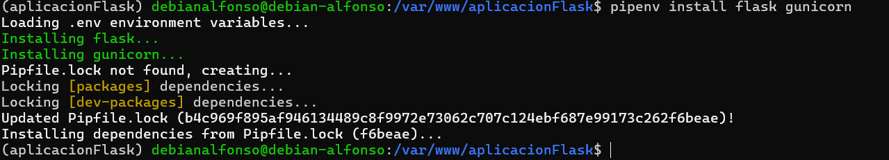 -
Ahora vamos a crear nuestra aplicación Flask lo más rápido posible. Para ello crearemos dos archivos,
application.pyywsgi.pycon este contenido respectivamente, mediante el comandotouch application.py wsgi.py
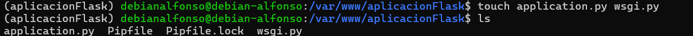 -
Ahora añadimos el contenido a cada archivo.
Archivo application.py:
from flask import Flask
app = Flask(__name__)
@app.route('/')
def index():
return '<h1>Aplicacion desplegada</h1>'
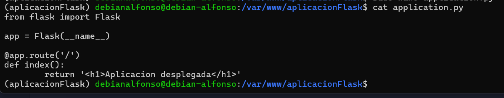
Archivo wsgi.py:
from application import app
if __name__ == '__main__':
app.run(debug=False)
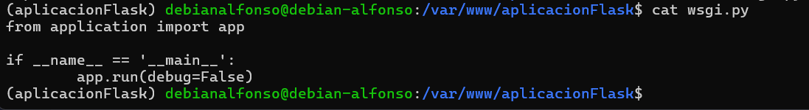
-
Ahora iniciamos nuestra aplicación con
flask run --host '0.0.0.0'a modo de comprobación con el servidor web integrado en Flask. Si especificamos la dirección0.0.0.0lo que estamos diciendo al servidor es que escuche a todas sus interfaces en caso de tenerlas. 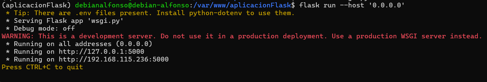 -
Ahora accedemos desde nuestro navegador a la dirección IP
http://IP-maq-virtual:5000y deberíamos ver lo siguiente: 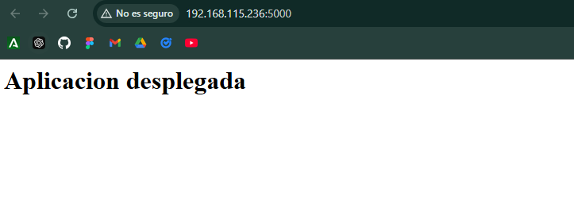 -
Tras esto, paramos el servidor con
CTRL + C. -
Ahora comprobaremos que Gunicor funciona correctamente mediante el comando
gunicorn -workers 4 --bind 0.0.0.0:5000 wsgi:app. Si con el servidor de desarrollo no tuvimos ningun problema, deberiamos verlo perfectamente en nuestro navegador:
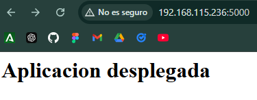 -
Todavía dentro del entorno virtual, debemos obtener la ruta desde donde se ejecuta gunicorn para poder configurar más adelante un servicio del sistema con el comando
which gunicorn:
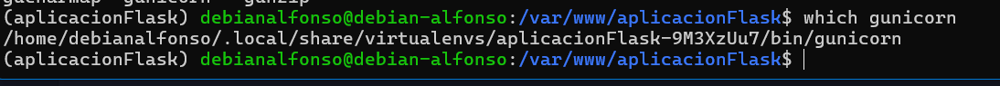 -
Por último, salimos del entorno virtual con
deactivate.
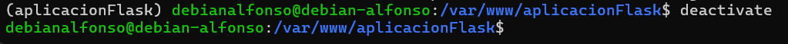
2.- Despliegue con Nginx
Iniciamos Nginx y comprobamos que su estado sea activo:
sudo systemctl start nginx
sudo systemctl status nginx
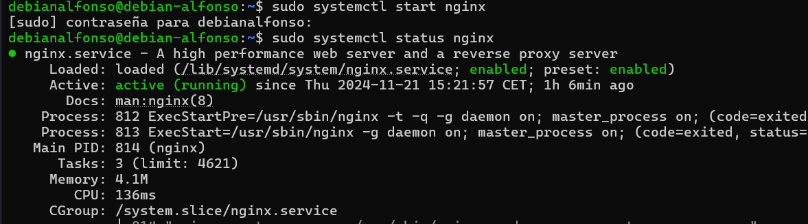
-
Creamos un archivo con
sudo nano /etc/systemd/system/nombreArchivopara quesystemdcorra Gunicorn como un servicio más del sistema:
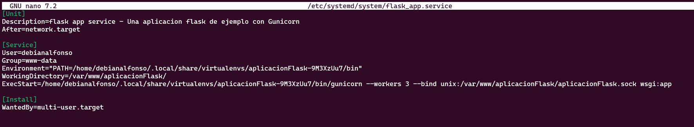 -
Ahora habilitamos el servicio con
systemctl enable nombreServicioy lo iniciamos consystemctl start nombreServicio.
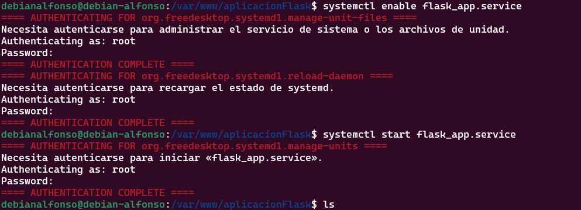 -
Ahora crearemos un archivo de configuración en Nginx con
sudo nano /etc/nginx/sites-available/nombreAplicaciony ponemos lo siguiente:
server {
listen 80;
server_name mi_aplicacion www.mi_aplicacion;
access_log /var/log/nginx/mi_aplicacion.access.log;
error_log /var/log/nginx/mi_aplicacion.error.log;
location / {
include proxy_params;
proxy_pass http://unix:/var/www/nombre_aplicacion/nombre_aplicacion.sock;
}
}
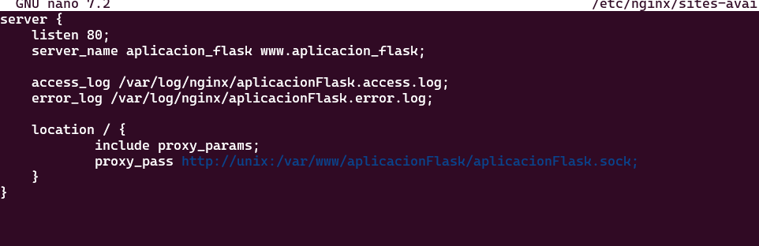
-
Ahora creamos un enlace simbólico con
sudo ln -s /etc/nginx/sites-available/aplicacionFlask /etc/nginx/sites-enabled/y nos aseguramos que se ha creado el enlace conls -l /etc/nginx/sites-enabled/ | grep aplicacionFlask.
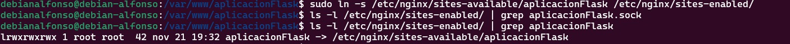 -
Comprobamos que el archivo de configuración no contiene errores, reiniciamos Nginx y comprobamos que este activo:
nginx -t
sudo systemctl restart nginx
sudo systemctl status nginx
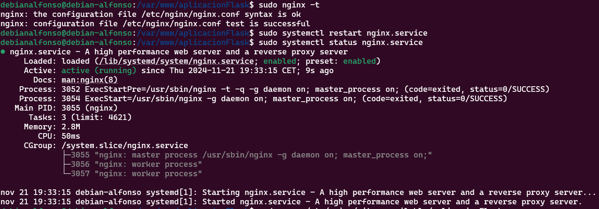
-
Ahora la única manera de acceder a nuestra aplicación es mediante el
server_name. Para ello, editamos el archivo/etc/hostsde nuestra máquina para que asocie la IP de la máquina virtual a nuestroserver_name.
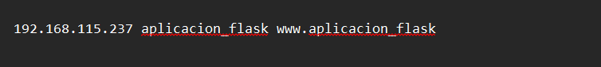 -
El último paso es acceder mediante nuestro navegador:
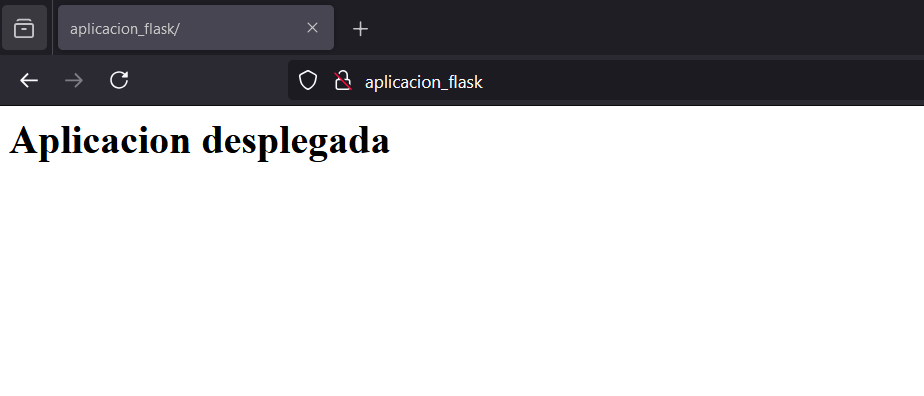
3.- Ejercicio
Repite todo el proceso con la aplicación del siguiente repositorio: https://github.com/raul-profesor/Practica-3.5.
Clonamos el repositorio en nuestro direectorio /var/www con el comando sudo git clone https://github.com/raul-profesor/Practica-3.5.
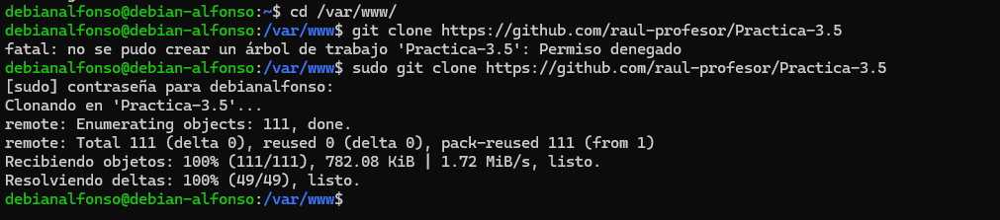
Cambiamos el dueño a nuestro usuario con el comando sudo chown -R USUARIO:www-data /var/www/nombreAplicacion.
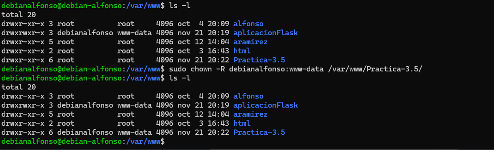
Establecemos los permisos adecuados con chmod -R 775 /var/www/nombreAplicacion.
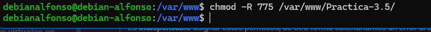
Creamos un archivo oculto .env dentro del directorio de nuestra aplicación con touch .env.
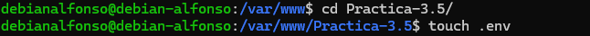
Editamos el archivo con sudo nano .env y después vemos los cambios con cat .env.
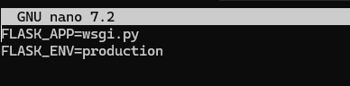
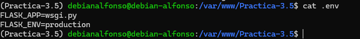
Ahora iniciamos nuestro entorno virtual con pipenv shell para que cargue las variables de entorno desde el fichero .env.

Ahora instalamos las dependencias con pipenv install -r requirements.txt.
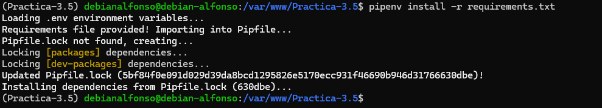
Instalamos gunicorn con el comando pipenv install flask gunicorn.
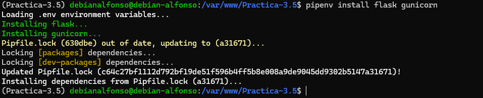
Creamos un archivo wsgi.py que contendrá lo siguiente:
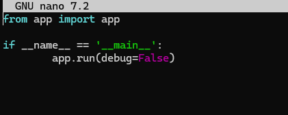
Por último, corremos nuestra aplicación con flask run --host '0.0.0.0';
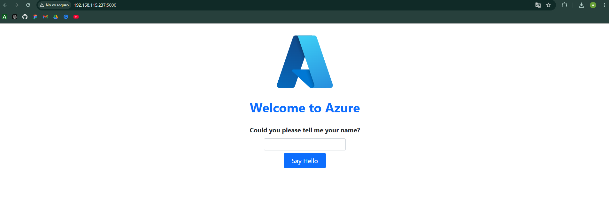
Y comprobamos que podemos acceder mediante gunicorn --workers 4 --bind 0.0.0.0:8000 wsgi:app.
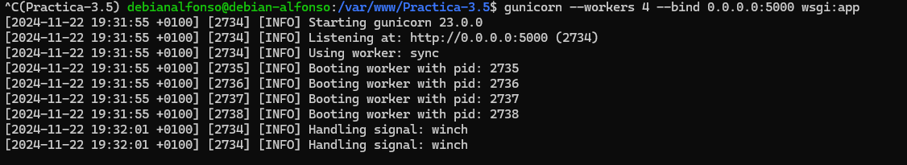
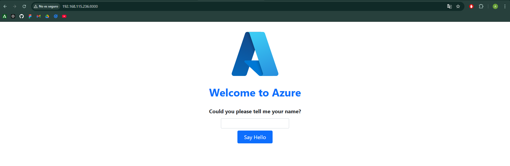
Usamos el comando which gunicorn para poder configurar más tarde un servicio.
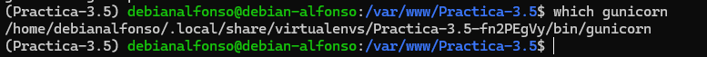
Ya podemos salir del entorno virtual con deactivate.
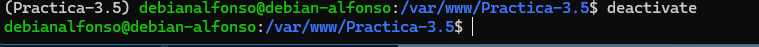
3.1.- Nginx
Ahora vamos a desplegarla en Nginx, para ello:
-
Creamos un archivo para que
systemdcorra Gunicorn como un servicio más:
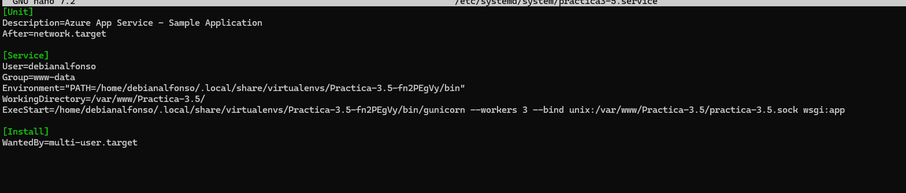 -
Ahora habilitamos el servicio con
systemctl enable nombreServicioy lo iniciamos consystemctl start nombreServicio.
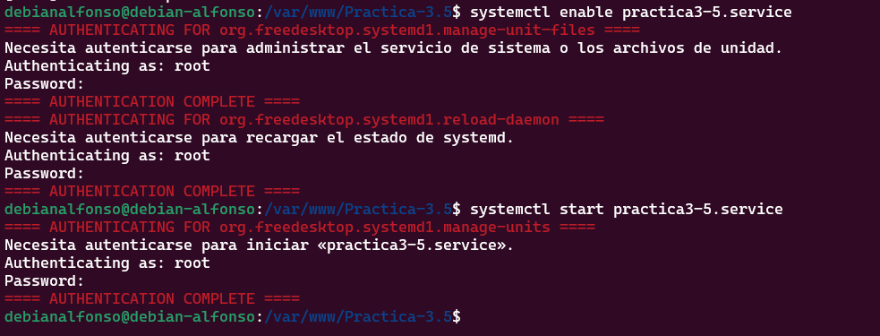 -
Creamos un archivo donde configuraremos el sitio web de Nginx con
sudo nano /etc/nginx/sites-available/nombreAplicacion.
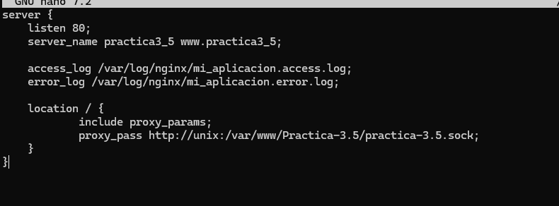 -
Creamos un enlace simbólico con
sudo ln -s /etc/nginx/sites-available/nombreAplicacion /etc/nginx/sites-enabled/.
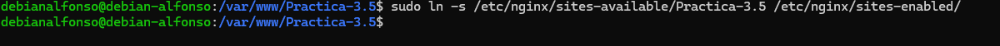 -
Nos aseguramos que se ha creado con
ls -l /etc/nginx/sites-enabled | grep nombreAplicacion.
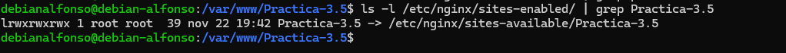 -
Comprobamos que Nginx no contiene errores con
nginx -t, lo reiniciamos consudo systemctl restart nginxy vemos su estado consudo systemctl status nginx.
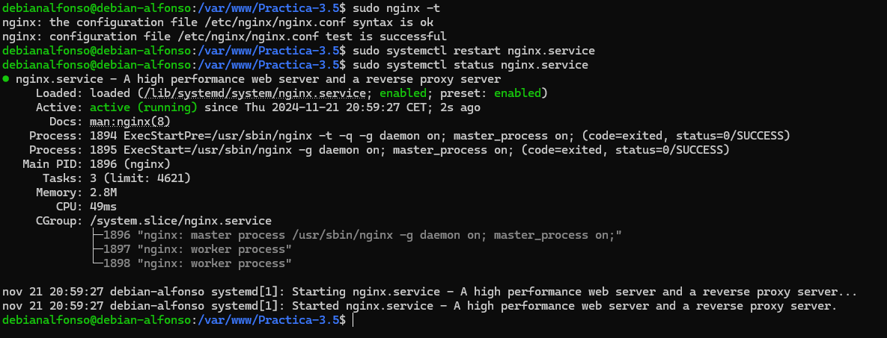 -
Lo último que tendremos que hacer es editar el archivo
/etc/hostspara asociar la IP de la máquina a nuestroserver_name.
-
Accedemos al navegador y si todo ha ido bien veremos el siguiente contenido:
4.- Cuestiones
4.1.- Busca, lee, entiende y explica qué es y para que sirve un servidor WSGI.
Un servidor WSGI es un estándar que define cómo los servidores web deben comunicarse con las aplicaciones web Python. Permite que aplicaciones como Flask o Django procesen solicitudes HTTP y generen respuestas. Sirve para: - Conectar la aplicación Python con servidores web como NGINX o Apache. - Procesar solicitudes HTTP y devolver respuestas a los usuarios. - Mejorar el rendimiento mediante la gestión de múltiples procesos de trabajo (workers).